[Jak se pozná, že už to mám?]
Verze: 2026-11-15 | Kontrolní seznam výsledku modulu
200 a příjmení novak. Vy všude dosaďte číslo svého pracoviště (192.168.N.x, kde N je číslo vašeho pracoviště) a své příjmení bez diakritiky (prijmeni.cyberschool.internal).
Ověření tohoto modulu probíhá ve spolupráci mezi řadičem domény SRV1-DC a klientskou stanicí PC1-WIN.
1. Struktura OU existuje a je kompletní (SRV1-DC)
V Active Directory Users and Computers (zapněte View → Advanced Features) vidíte pod doménou <prijmeni>.cyberschool.internal OU Skola a pod ní kompletní strom: Zamestnanci (Ucitele, Vedeni, THP), Studenti (Gymnazium-8lete, Gymnazium-4lete, Elektrotechnika, Informatika), Pocitace (Servery, Klienti-Ucebny, Klienti-Kancelare), Skupiny, Sluzebni-ucty.
Get-ADOrganizationalUnit -Filter * | Select-Object Name, ProtectedFromAccidentalDeletion, DistinguishedName | Sort-Object DistinguishedNameVýstup obsahuje přesně 17 OU (kořenovou Skola + 15 podřízených OU se zapnutým ProtectedFromAccidentalDeletion : True + výchozí Domain Controllers z Modulu 1 beze změny).
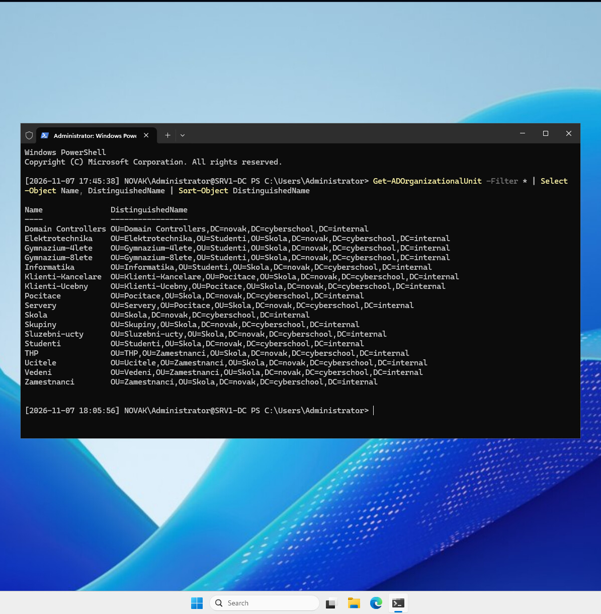
2. Skupiny existují se správným rozsahem a typem (SRV1-DC)
$baseDN = (Get-ADDomain).DistinguishedName
Get-ADGroup -Filter * -SearchBase "OU=Skupiny,OU=Skola,$baseDN" | Select-Object Name, GroupScope, GroupCategory | Sort-Object NameVrátí všech 14 skupin (GG_Studenti, GG_Studenti_G8, GG_Studenti_G4, GG_Studenti_EL, GG_Studenti_IT, GG_Ucitele, GG_Zamestnanci, GG_Vedeni, GG_THP, GG_Sekretariat, GG_PK_Matematika, GG_PK_Informatika, GG_PK_Jazyky, GG_IT-Sprava), všechny GroupScope = Global a GroupCategory = Security.
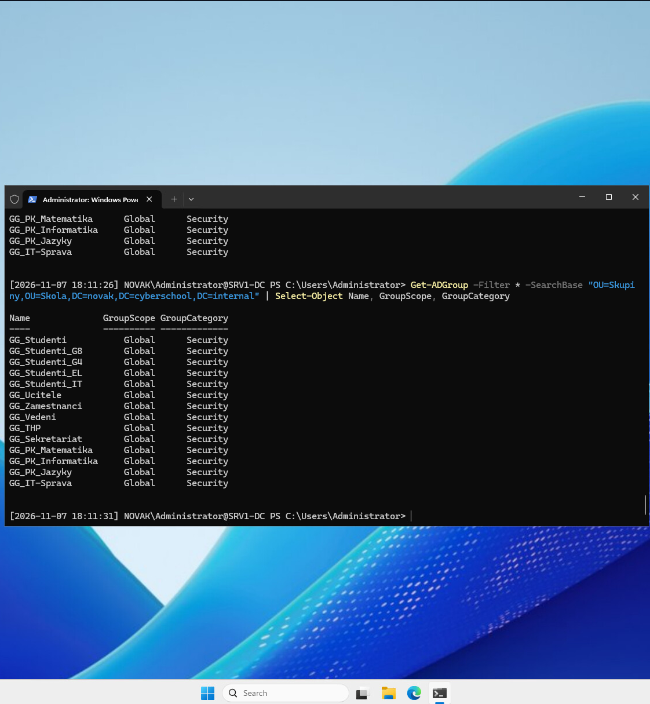
3. Členství ve skupinách odpovídá zadání (SRV1-DC)
Get-ADGroupMember GG_Ucitele | Select-Object Name
Get-ADGroupMember GG_PK_Informatika | Select-Object Name
Get-ADGroupMember GG_Zamestnanci | Select-Object Name
Get-ADGroupMember GG_Studenti | Select-Object Name
Get-ADGroupMember GG_Studenti -Recursive | Select-Object NameGG_Uciteleobsahujejana.teacherapetr.teacher.GG_PK_Informatikaobsahujejana.teacher;GG_PK_Matematikaobsahujepetr.teacher.GG_Zamestnanciobsahuje vnořené skupinyGG_Ucitele,GG_THP,GG_Vedeni(rekurzivně imarie.zamestnanecakarel.zamestnanec).GG_Studentiobsahuje přímo pouze 4 oborové skupiny (GG_Studenti_G8,GG_Studenti_G4,GG_Studenti_EL,GG_Studenti_IT); s-Recursivevrátí všech 6 žáků.GG_Vedeniobsahujekarel.zamestnanec;GG_Sekretariatobsahujemarie.zamestnanec.
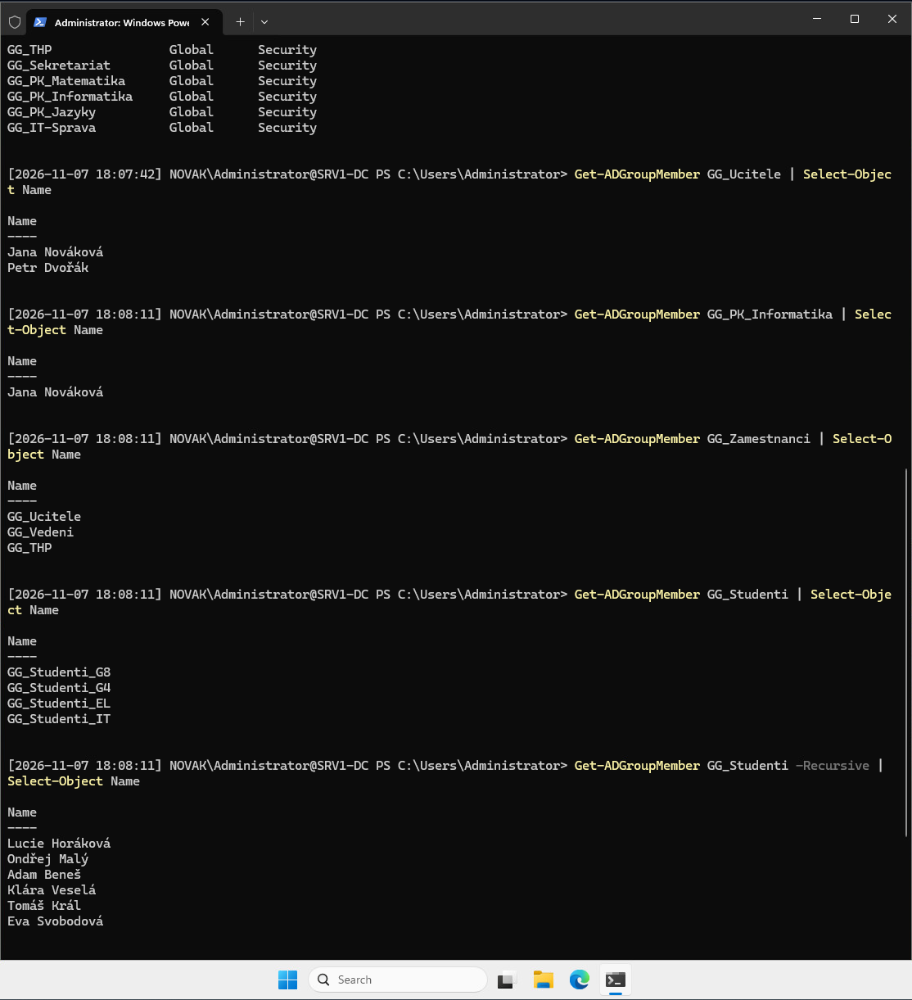
4. Účty existují ve správných OU a jsou aktivní (SRV1-DC)
$baseDN = (Get-ADDomain).DistinguishedName
Get-ADUser -Filter * -SearchBase "OU=Skola,$baseDN" -Properties Enabled | Select-Object Name, Enabled, DistinguishedName | Sort-Object NameVrátí 10 účtů ve správných OU (všechny Enabled = True).
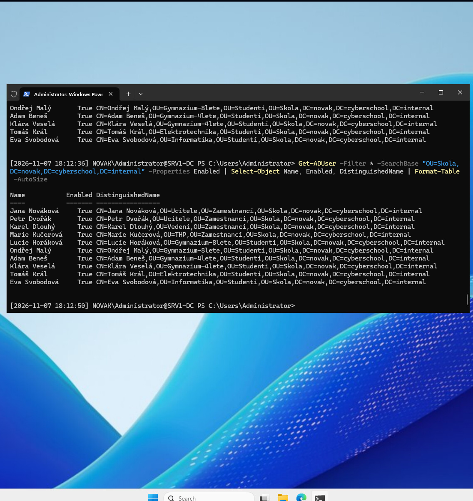
5. Přihlášení na klientovi funguje pro každou postavu (PC1-WIN)
Na stanici PC1-WIN se postupně přihlásíte účty eva.student@<prijmeni>.cyberschool.internal, lucie.student@..., jana.teacher@... a karel.zamestnanec@... — vše se stejným heslem Pa55w.rd.
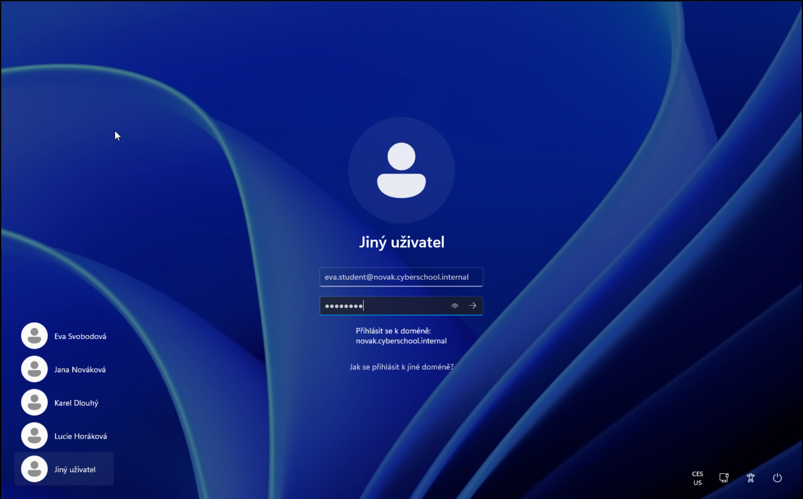
6. Domovské složky fungují (SRV1-DC a PC1-WIN)
Po přihlášení na PC1-WIN má eva.student připojený síťový disk H: (\\SRV1-DC\home$\eva.student) a může do něj zapisovat. Jiný uživatel (tomas.student) dostane při pokusu otevřít \\SRV1-DC\home$\eva.student chybu Access is denied.
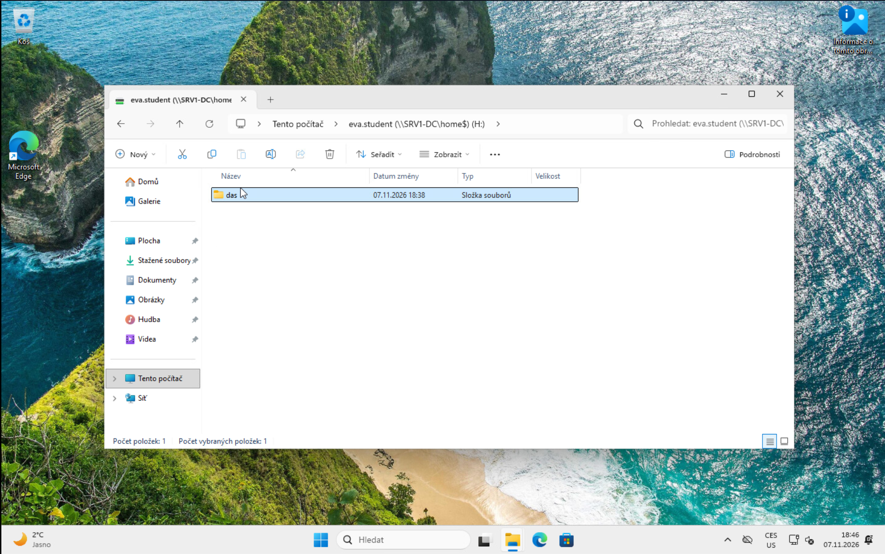
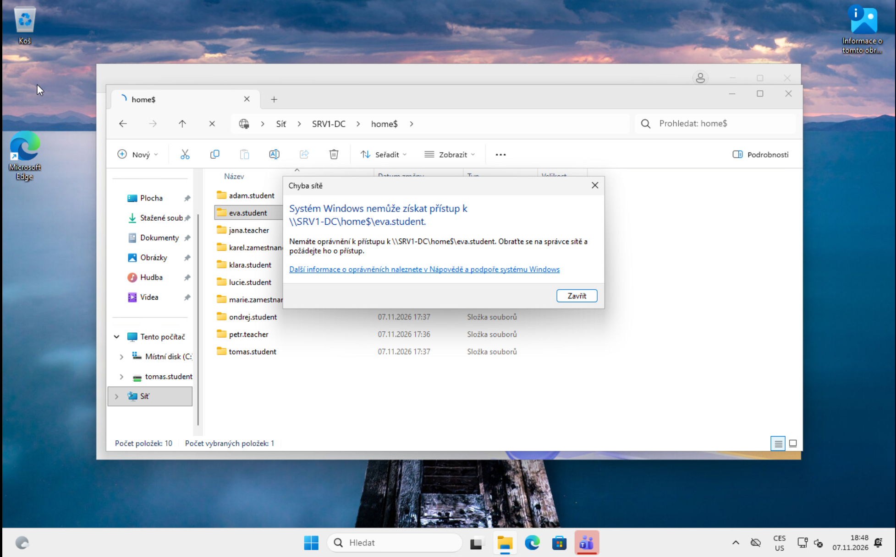
7. Klient je viditelný ve správné OU (SRV1-DC)
Get-ADComputer -Identity "PC1-WIN" | Select-Object Name, DistinguishedNameV ADUC i ve výstupu je objekt PC1-WIN umístěn v Skola\Pocitace\Klienti-Ucebny.
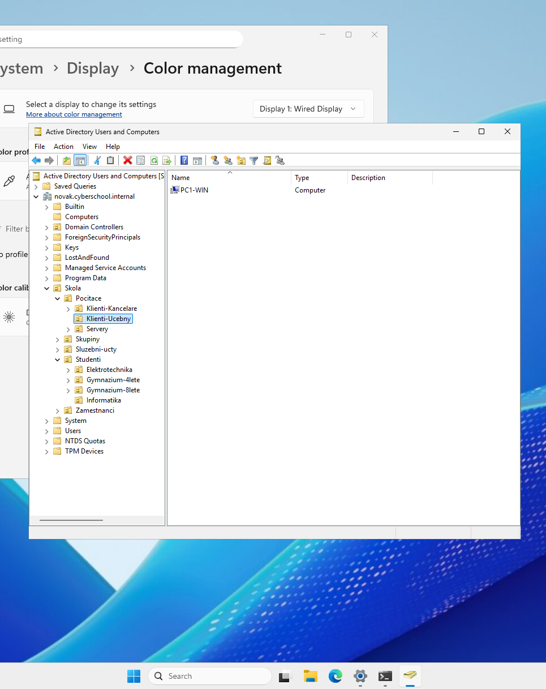
8. Žádný personalizovaný admin účet neexistuje (SRV1-DC)
Get-ADUser -Filter "SamAccountName -like '*juchelka*' -or SamAccountName -like '*peclivy*'"Vrátí prázdný výsledek — správa probíhá výhradně přes vestavěný účet Administrator.
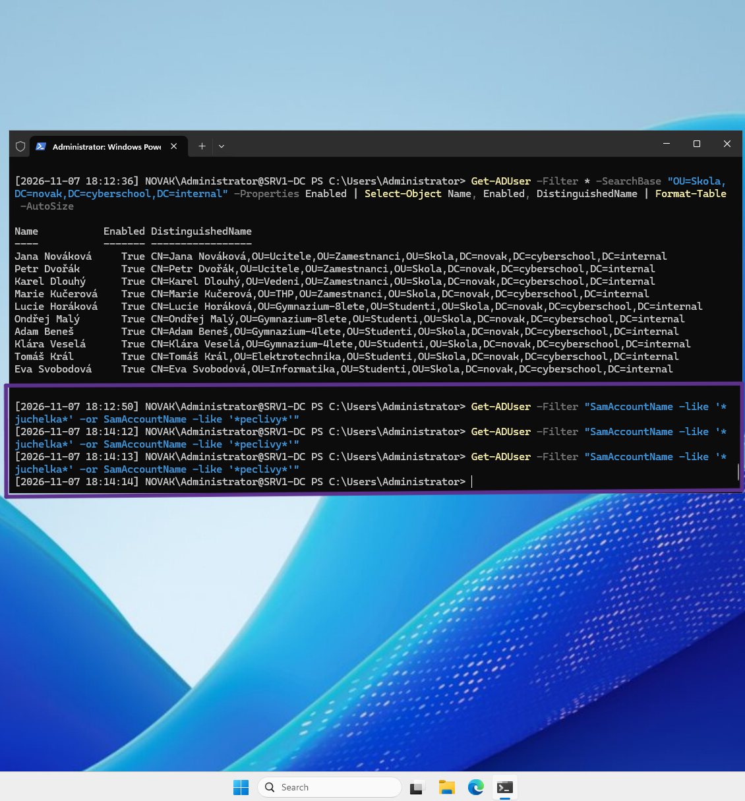
9. Kočovné profily jsou nastavené a funkční (SRV1-DC a PC1-WIN)
Get-SmbShare -Name 'profiles$' | Select-Object Name, Path
Get-ADUser eva.student -Properties ProfilePath | Select-Object SamAccountName, ProfilePath
Get-ChildItem C:\profiles | Select-Object Namenet user eva.student /domain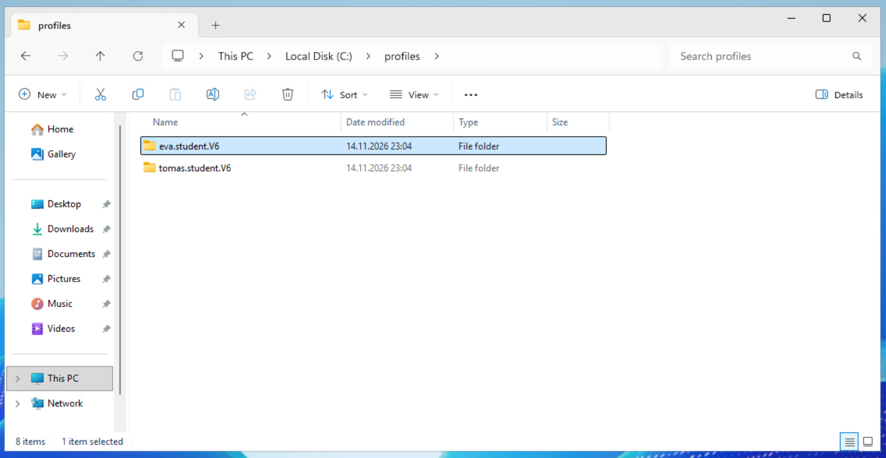
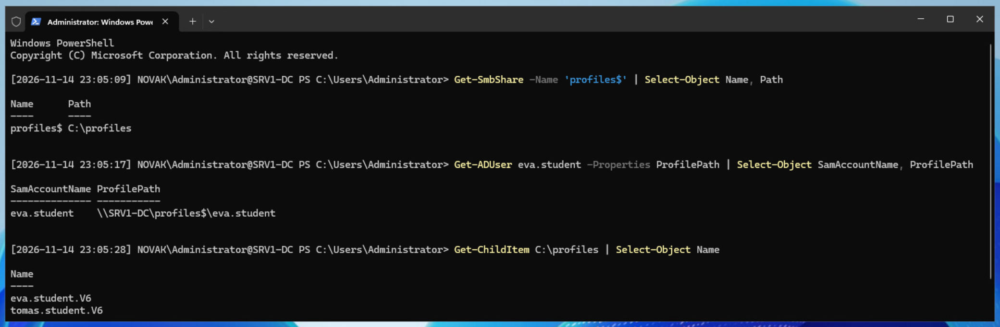
10. Otisk konfigurace pro odevzdání (SRV1-DC a PC1-WIN)
Na SRV1-DC:
Get-Date
whoami
hostname
(Get-CimInstance Win32_ComputerSystemProduct).UUID
(Get-ADDomain).DNSRoot
(Get-ADDomain).DomainSID.ValueNa PC1-WIN:
Get-Date
whoami
hostname
(Get-CimInstance Win32_ComputerSystemProduct).UUID
(Get-CimInstance Win32_ComputerSystem).Domain11. (Nepovinné) Rychlé automatické ověření celého stroje
Na serveru SRV1-DC:
powershell -ExecutionPolicy Bypass -Command "curl.exe --progress-bar -L https://raw.githubusercontent.com/DeepyCat/well_ops/main/skripty/04_check_SRV1-DC.bat -o check.bat; .\check.bat; Remove-Item -Force check.bat -ErrorAction SilentlyContinue"Na klientovi PC1-WIN:
powershell -ExecutionPolicy Bypass -Command "curl.exe --progress-bar -L https://raw.githubusercontent.com/DeepyCat/well_ops/main/skripty/04_check_PC1-WIN.bat -o check.bat; .\check.bat; Remove-Item -Force check.bat -ErrorAction SilentlyContinue"